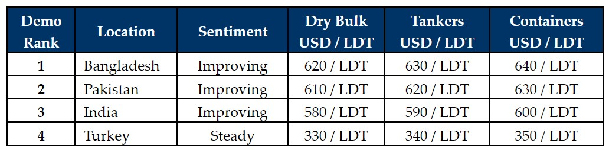

inWeekly Demolition Reports14/02/2022

Following recent upward moves on domestic steel plate prices at nearly every major recycling destination, it was another week of firm pricing and a sub-continent market that is still on an aggressive footing for the most part.
Demand remains rampant and capacity at yards remains open for any available tonnage (market or otherwise), leading to bidding wars on any of the marginal number of choice units hitting the recycling markets.
L/Cs are of continuing concern across the sub-continent destinations, and it is becoming increasingly important / urgent for industry players to have additional bank checks and margins must be placed with the opening banks to ensure L/Cs are opened and released in a timely manner. Therefore, the right selection of Cash / End Buyers’ is an essential part of ensuring a smooth and successful delivery, especially at these record levels of today.
On the Western end of things, the Turkish market seems as though levels here too are looking to take off as import and local steel prices further firmed this week and the Lira sails through its newfound stability in the mid TRY 13s against the U.S. Dollar.
The supply of vessels has seen mostly tankers (often as young as 2003 – and younger at times) being sold for recycling this year. However, we are also likely to see Capesize Bulkers (one was sold this week) with charter rates having cooled off significantly over the previous few weeks, despite bouncing back towards the end of this week.
Vessels (Dry Bulk or Tankers) with surveys due and BWTS due to be installed, are likely to make up a majority of the supply for the remainder of the year, as owners look to take advantage of these fantastic prices, well over USD 600/LDT.
For week 6 of 2022, GMS demo rankings / pricing for the week are as below.

📄 Download PDF: 2022-02-14mlP_org.pdfSource: GMS,Inc. (https://www.gmsinc.net/gms_new/index.php/web)